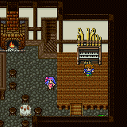

Story Line
เริ่มเกม หลังจากที่อุกาบาตตกลงมา Butz จึงขี่ Chocobo ไปสำรวจ
เขาได้พบกับ Lenna โดนทำร้าย จึงช่วยไว้
และพบกับชายแก่คนหนึ่ง ซึ่งความจำเสื่อม ชื่อ Galuf
Lenna ต้องการไปยัง Wind Shrine เพื่อค้นหาพ่อของเธอ
ส่วน Galuf จำได้ว่าตนเองก็อยากไป Wind Shrine เหมือนกัน
ทีแรก Butz ไม่อยากไปยุ่งด้วย แต่ก็ตกลงใจไปด้วยกัน
Pirate Cave
การไปยัง Wind Shrine ต้องใช้เรือ แต่พวกเขาไม่มีเรือ
จึงเข้าถ้ำโจรสลัดเพื่อขโมยเรือ แต่กลับโดนจับ
Lenna จึงขอแลกเปลี่ยนเรือกับสร้อยของตน
เพราะเธอเป็นถึงธิดาของกษัตริย์แห่ง Tycoon
เมื่อ Faris เห็น จึงยอมปล่อยตัวพวก Butz และร่วมเดินทางไปด้วย
ความจริงแล้ว Faris เองก็มีสร้อยเหมือนกันกับของ Lenna
Tule (Town)
(แวะหมู่บ้าน Tule เพื่อซื้อสิ่งจำเป็น)
ภายใน Pub ของหมู่บ้าน Tule จะมี Piano01 ให้เล่นด้วย

* Note : อย่าลืมเล่น Piano ให้ครบทุกอันด้วย จะได้ Song
เป็นของตอบแทน
Side-Quest "Boko"
ให้นั่งเรือกลับไปยังถ้ำโจรสลัด (Pirate Cave)
จะเจอกับ Boko นอนบาดเจ็บอยู่
Wind Shrine

เข้าไปเพื่อปกป้อง Crystal แห่งลม
Boss : Wingrapter
HP : 500
* Note : หาก Wingrapter หุบปีกลง
ห้ามโจมตีใส่เด็ดขาด เพราะจะโดนโจมตีกลับอย่างรุนแรง
แต่เมื่อเข้าไปยังห้อง Crystal กลับพบว่า Crystal แตกไปเสียแล้ว
เมื่อ Crystal ลมแตก ทำให้สายลมหยุดพัด ไม่สามารถแล่นเรือได้
แต่เรือของ Faris ใช้มังกร Sydra เป็นตัวลาก จึงสามารถแล่นได้
Get 6 jobs
หลังจาก Crystal แตก จะได้รับเศษ Crystal ทำให้สามารถเปลี่ยนอาชีพได้ ดังนี้
Knight
Thief
Monk
Blue Mage
White Mage
Black Mage
* Note : อาชีพและ Ability ที่น่าใช้ตอนนี้คือ
Knight เก็บ Ability ให้ได้ Double Grip ทำให้สามารถถือเล่มเดียวโดยถือสองมือได้
Thief ใช้สำหรับเดินในหมู่บ้าน และ Dungeon จะทำให้เห็นทางลับ และวิ่งได้
Blue Mage ใช้สำหรับเก็บ Learning Magic
จากนั้นเก็บ Learning Magic 3 เวทย์ คือ
Goblin Punch จาก Goblin พบได้ที่ บริเวณหน้าถ้ำโจรสลัด
Vampire จาก Steel Bat พบได้ที่ ในถ้ำโจรสลัด
Aero จาก Mold Wind พบได้ที่ ใน Wind
Shirne
Tule (Town)
กลับมาเข้าบ้านของ Zork เขาจะให้กุญแจเปิดประตูน้ำ
Torna Canal
Boss : Karl
HP : 650
Weak : Lightning
เมื่อปราบได้ เรือจะแตก ทำให้ลอยไปติดยังสุสานเรือ
Ship Graveyard

ในนี้จะมี Map ให้เก็บด้วย ห้ามพลาดเด็ดขาด
ภายในสุสานเรือ จะพบว่า แท้จริงแล้ว Faris เป็นผู้หญิง
Boss : Siren
Siren จะใช้ภาพลวงตาของคนที่รู้จัก เพื่อหลอกขโมยวิญญาณ
แต่ Garuf ความจำเสื่อม ทำให้จำคนที่ Siren สร้างขึ้นมาไม่ได้
HP : 900
Weak : Fire (When undead)
* Note : Siren สามารถแปลงร่างเป็น Undead ได้
เมื่อเธอเปลี่ยนร่างเป็น Undead จะมีพลังป้องกันที่สูงมาก
ให้ใช้เวทย์ Fire หรือ Cure โจมตีใส่เธอ
Carwen (Town)
เมื่อเรืออับปางลงแล้ว ก็ไม่สามารถใช้เรือธรรมดาเดินทางได้
เพราะลมไม่พัด ทางออกคือ ค้นหามังกรบิน เพื่อใช้เป็นพาหนะ
ภายใน Pub ของหมู่บ้าน Carwen จะมี Piano02 ให้เล่นด้วย

* Note : อย่าลืมเล่น Piano ให้ครบทุกอันด้วย จะได้ Song
เป็นของตอบแทน
North Mountain
ทางด้านเหนือของหมู่บ้าน มีภูเขาที่มีคำล่ำลือว่ามีมังกรบินอาศัยอยู่
เก็บ Learning Magic 1 เวทย์ ดังนี้
Flash จาก Blocks พบได้ที่ บนภูเขาแห่งนี้
Boss : Magiza

HP : 650
* Note : หากการต่อสู้ยืดเยื้อ Magisa จะเรียก Faltzer ออกมาช่วยด้วย
Boss : Faltzer
HP : 850
Side-Quest "Tycoon"
ให้ขี่มังกร (Hiryuu) กลับไปยังปราสาท Tycoon
จะได้รับการต้อนรับอย่างดี
Walz
* Note : ใน FF5 eng บน SNES จะแปลชื่อเมือง Walz ว่า Worus
Walz Castle
มายังปราสาท Walz เพื่อเตือนพระราชาไม่ให้ใช้พลังของ Crystal น้ำ
แต่ยังไม่ทันไร ก็มีอุกาบาตตกลงมาใกล้ๆ กับหอคอย Walz
ตรงทางนี้จะมีทางลับสองทาง คือขึ้นประตูบน และลงประตูล่าง
หากขึ้นประตูบนจะเจอทางลับ ซึ่งมีศัตรูอาศัยอยู่
Side-Quest
"Treasure of Walz"
ภายในนั้นจะมีสมบัติอยู่คือ Time Magic "Drag"
หากลงประตูล่างจะมีทางลับไปเอา Summon Magic "Shiva"
Side-Quest "Shiva"
ภายในปราสาท Walz จะมีทางลับไปเอา Summon Magic "Shiva"
ด้วย
* Note : หากขโมย Item จาก IceSoldier จะได้ดาบ Mythril ซึ่งทำให้เล่นได้ง่ายขึ้น
* Note : อย่าปล่อยหมาป่าออกมาจากห้องขังล่ะ
Walz Tower
เข้าไปสำรวจ Crystal น้ำ ว่าปรกติดีหรือเปล่า
Boss : Garula
HP : 1,200
Get 5 jobs
Berserker
Mystic Knight
Summoner
Red Mage
Time Mage
* Note : ยังมีเศษ Crystal อีกอันที่ยังเก็บไม่ได้ แต่สามารถเก็บได้ภายหลัง
Meteo Transport
เข้าไปภายในอุกาบาตที่อยู่ใกล้ๆ หอคอย Walz จะมีทาง Warp
เมื่อ Warp จะไปโผล่ที่อุกาบาตอีกแห่งหนึ่ง เดินไปด้านซ้านจะเจอปราสาท Kanak
Next Story
1